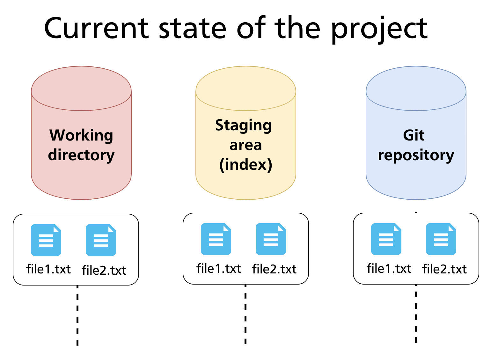
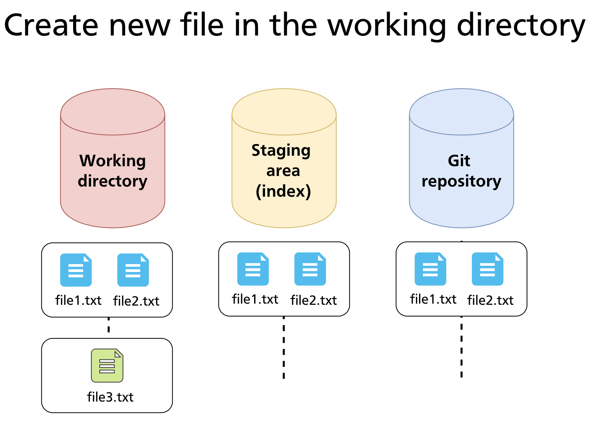

Chapter 06 — Tracking Files & File States
Chapter 05 introduced the four file states — Untracked, Unmodified, Modified, Staged — and the commands that drive the basic loop. This chapter goes deeper: it explains how to read Git's status output in detail, how to stage exactly the changes you want, how to inspect differences before committing, and how to undo staging or discard working-directory changes safely.
Reading git status Output
git status is the most frequently used Git command. It shows the current state of every file in the repository relative to the last commit and the staging area.
A typical output has up to three sections:
git status
# On branch main
# Changes to be committed:
# (use "git restore --staged <file>..." to unstage)
# modified: README.md
#
# Changes not staged for commit:
# (use "git add <file>..." to update what will be committed)
# (use "git restore <file>..." to discard changes in working directory)
# modified: src/app.js
#
# Untracked files:
# (use "git add <file>..." to include in what will be committed)
# notes.txt
| Section | Meaning |
|---|---|
| Changes to be committed | Files in the staging area — will be included in the next git commit |
| Changes not staged for commit | Files that are tracked and have been modified, but not yet staged |
| Untracked files | Files Git has never seen before; not included in commits until staged |
When all three areas are in sync — every tracked file is committed and nothing is staged — git status reports:
Short-Form Status
For a compact view, use -s (short):
git status -s
# M src/app.js # modified in working dir, not staged
# M README.md # staged
# ?? notes.txt # untracked
# A newfile.py # new file, staged
The two-character code works as two columns: the left column reflects the staging area; the right column reflects the working directory. Common codes:
| Code | Meaning |
|---|---|
M (left) |
Staged modification |
M (right) |
Unstaged modification |
A |
Staged new file |
D |
Deleted |
?? |
Untracked |
R |
Renamed |
The Three-Area Model in Practice
At any moment, files exist across the three areas. The diagram below shows a repository after two commits where file1.txt and file2.txt are fully committed and consistent across all three areas.

When a new file is created in the working directory, it starts as Untracked — visible to the filesystem but invisible to Git until explicitly staged.

Staging Files
Stage a specific file
Stage all changes in a directory
Stage all changes in the current directory tree
This stages new files, modifications, and deletions within the current directory and its subdirectories. It does not stage changes outside the current directory.
Stage all changes in the entire repository
Unlike git add ., this operates from the repository root regardless of where you run it.
Stage individual hunks interactively
This walks you through each changed block (hunk) in your working directory and lets you decide whether to stage it. Options at each hunk:
| Key | Action |
|---|---|
y |
Stage this hunk |
n |
Skip this hunk |
s |
Split into smaller hunks |
e |
Edit the hunk manually |
q |
Quit; stop reviewing |
? |
Show help |
git add -p is particularly useful when a file contains two unrelated changes and you want to commit them separately — keeping each commit focused on a single concern.
Further reading:
git adddocumentation
Inspecting Differences
Before committing, it is good practice to review exactly what is changing. Git provides three comparison modes:
Working directory vs staging area
Shows what has changed in tracked files that are not yet staged. If all changes are staged, this produces no output.
Staging area vs last commit
Shows what is staged and will be included in the next commit. This is the most useful command to run immediately before git commit.
All changes since last commit
Shows the combined diff of staged and unstaged changes relative to the last commit.
Diff for a specific file
Diff between two commits
Further reading:
git diffdocumentation
Unstaging Changes
If you staged a file by mistake, move it back to the working directory without losing your edits:
Modern syntax (Git 2.23+)
Legacy syntax (still widely documented)
Both commands move the file from Staged → Modified — the changes remain in your working directory, they are simply no longer queued for the next commit.
Discarding Working Directory Changes
To throw away uncommitted changes in the working directory and revert a file to its last committed state:
Modern syntax (Git 2.23+)
Legacy syntax
Warning: This operation is irreversible. Changes discarded this way are not recoverable via Git — they were never committed, so there is no snapshot to restore from. Only use this when you are certain you do not need the changes.
To discard all working-directory changes at once:
Removing and Renaming Files
Remove a tracked file
This deletes notes.txt from the working directory and stages the deletion. The file will be absent from the repository after the next commit.
Stop tracking without deleting from disk
Removes notes.txt from Git's tracking (and from the staging area) but leaves the file on disk. This is the correct approach when you realise a file should have been in .gitignore from the start. After running this, add the file to .gitignore so it does not reappear as untracked.
Rename or move a file
git mv renames the file on disk and stages the rename in a single step. It is equivalent to:
Git detects renames automatically by comparing file content, so the history of old-name.txt remains accessible under the new name.
Further reading:
git rmdocumentation ·git mvdocumentation
Practical Walkthrough
The following example starts from a clean repository with two committed files and works through staging, inspection, and committing a new file alongside an edit to an existing one.
Setup — committed state
Step 1 — create a new file and edit an existing one
echo "Third file content" > file3.txt
echo "Updated content" >> file1.txt
git status
# Changes not staged for commit:
# modified: file1.txt
# Untracked files:
# file3.txt
Step 2 — inspect what changed
file3.txt does not appear in git diff — it is untracked, so there is no previous version to compare against.
Step 3 — stage selectively
# Stage only file3.txt for now
git add file3.txt
git status -s
# AM file3.txt # staged (A), but also modified? No — new file fully staged
# M file1.txt # modified but not staged
Step 4 — review what will be committed
Only file3.txt is staged — file1.txt's changes are not yet included.
Step 5 — commit the staged file only
file1.txt remains modified but unstaged, ready to be included in a future commit.
Step 6 — stage and commit the edit
Summary
git statusshows which files are staged, unstaged, or untracked; use-sfor a compact view.git addhas multiple forms: by file, by directory,.(current tree),-A(whole repo),-p(interactive hunks).git diffcompares the working directory to the staging area;git diff --stagedcompares the staging area to the last commit.git restore --stagedunstages without losing changes;git restorediscards working-directory changes irreversibly.git rm --cachedstops tracking a file without deleting it from disk;git mvrenames and stages in one step.
Previous: Chapter 05 — Creating a Repository & Basic Operations · Next: Chapter 07 — Ignoring Files (.gitignore)